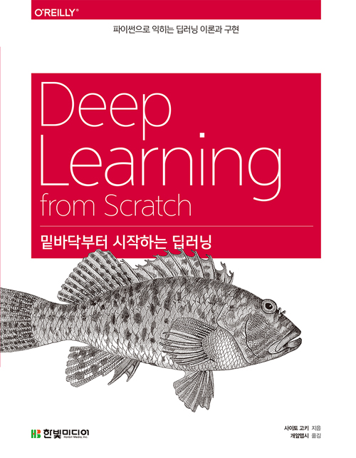

한국에서 일어나는 파이썬 관련 소식을 전합니다.
블로그
S3 Content-Disposition 업데이트, Gevent로 좀 더 빠르게 하기 by JuHong님
XE 기반의 홈페이지를 Flask로 이전하면서, 첨부 파일을 마이그레이션하는 과정과 일괄 처리 중 gevent를 사용하여 실행 시간을 줄인 과정을 JuHong님이 설명합니다.
차량 네트워크 통신 파싱하기 by 이정우 님
차량 네트워크에서 통신에 사용하는 CANdb(.dbc) 파일을 파이썬 오픈소스인 canmatrix를 사용하여 파싱해 본 경험을 이정우 님이 정리하였습니다.
버즈빌의 Django Rest Framework 사용기 by 버즈빌
버즈빌에서 Django Rest Framework를 도입하게 된 배경과 코드의 변경 과정, 몇몇 해결 과제들을 설명하고 있습니다.
한 눈에 보는 Django Rest Framework 뷰의 진화 by 고재웅
Django Rest Framework를 도입했을 때, 함수 기반 뷰를 어떤 식으로 바꿔갈 수 있는지를 고재웅 님이 정리하였습니다. 버즈빌의 글과 함께 읽으면 더 좋겠습니다.
(번역) 호텔에서 잡히는 UDP STREAM을 리버싱 해보았다 by Philip YS
심심해서 호텔 네트워크의 UDP Stream을 리버싱했던 경험을 적은 Reverse Engineering A Mysterious UDP Stream in My Hotel(by Gökberk Yaltıraklı) 글을 Philip YS 님이 번역하였습니다. 리버싱 내용이긴 하지만 어렵지 않고 재미있습니다.
프로젝트
카카오톡 옐로아이디 봇 스켈레톤 by 정겨울 님
카카오톡에서 옐로아이디 봇을 구현한 프로젝트를 정겨울 님이 공개하였습니다. Flask 0.12와 파이썬 3 기준입니다.
신간
밑바닥부터 시작하는 딥러닝 by 한빛미디어

- 사이토 고키 지음
- 개알맵시 옮김
강좌
(온라인) 파이썬 웹 프레임워크 Django 로 웹서비스 개발하기
NHN NEXT 교수 출신의 정호영 님이 inflearn에 Django 기초 강좌를 개설하였습니다.
- 수강료: 5만원
- 교육과정: 41개(총 2시간 28분)